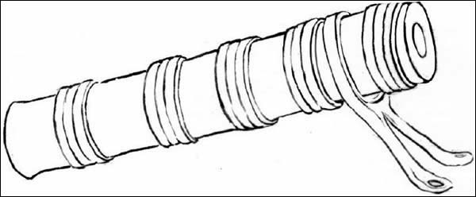
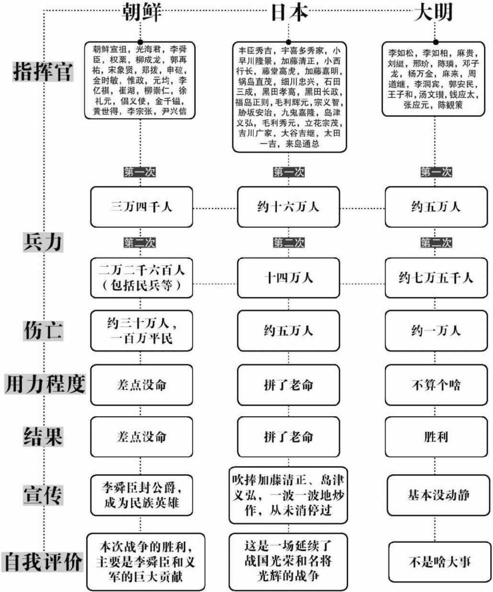

○ 在这个世界上 笨人的第一个特征 就是自以为聪明 李舜臣竟然孤军冲入敌阵 应该说 他很勇敢 但勇敢的另一个解释 就是愚蠢
——题记
在不安与等待中，十八日的夜晚到来。
此时的岛津义弘站在旗舰上，信心十足地向着目的地挺进。之前的泗川之战，虽然他只是侥幸捡个便宜，但毕竟是胜了，又被人捧为名将，就真把自己当回事了，之所以跑来救小西行长，倒不是他俩关系多好，无非是二杆子精神大爆发，别人不干，他偏干。
此外，他已认定，明军围困小西行长，必然放松外围的戒备，更想不到日军去而复返，此时进攻，必能一举击溃明军。
在这个世界上，笨人的第一特征，就是自认为聪明。
事实印证了岛津义弘的猜想，明军以往严加防范的露梁海峡，竟然毫无动静，由一万五千余人组成的日军舰队，就此大摇大摆地开了进去。
他们中间的大多数人都没能领到回航的船票。
日军的舰队规模很大，共有六百多条船，队列很长，当后军仍在陆续前进之时，前军的岛津义弘已依稀看到了前方的猫岛。
但他永远不可能到达那里了，因为当最后一条船进入露梁海口的时候，等待已久的邓子龙发动了攻击。
邓子龙手下的这三千兵，大多是浙江人，跟随他从浙江前来此地，虽然名不见经传，却绝非寻常。在五十多年前，这支队伍有一个更为响亮的名字——俞家军。
在当年那场艰苦卓绝的抗倭之战中，两位大明名将分别创建了专属于自己的军队：戚家军，以及俞家军。
俞大猷熟悉海战，是唯一堪与徐海对敌的明朝海军将领。而他所创建的俞家军，大都从渔民中选取，熟悉水性和流向，善于驾船，并经过严格训练，多次与倭寇海盗交战，有丰富的战斗经验，堪称明朝最精锐的水军。
经过五十年的淬炼与更替，他们来到了朝鲜，露梁海。
接到进攻命令后，邓子龙部从埋伏处突然驶出，将日军归路堵死，并以十只战船为一组，向日军舰队发起多点突袭。
这是一个致命的打击，由于日军队列过长，而且毫无防备，转瞬之间，后部上百条战船已被切成几段，虽然日军人数占优，却陷入明军分割包围，动弹不得。
包围圈内的日军一片慌乱，他们纷纷拿起武器，准备和跳上船的明军肉搏。然而明军战舰却丝毫不动，保持着诡异的平静。
日军的疑问没有持续太久，便听到了答案——可怕的轰鸣声。
明军的第二波攻击开始，不用跳帮，不用肉搏，因为在邓子龙的战舰上，装备着一种武器——虎蹲炮。这是一种大型火炮，射程可达半里，虽然威力一般，炮弹飞个几百米就得掉入水里，但近距离内打日军的铁皮木头船，还是绰绰有余。

↑ 虎蹲炮
↑ 露梁海之战
就这样，在炮轰、哀号和惨叫声中，日舰队后军损失惨重，基本丧失了作战能力。
当炮声响起的时候，前军的岛津义弘立即意识到，中埋伏了。
但很快，他就显示出了惊人的镇定与沉着，并作出了正确的判断——继续前进。
后军已经深陷重围，敌军兵力不清，所以目前唯一的方法，就是攻击向前，与顺天的小西行长会师。只有这样，才有反败为胜的可能。
在岛津义弘的指挥下，日军舰队抛弃了后军，不顾一切地向前挺进。
然而，他们没能走多远。
当岛津义弘军刚刚冲出露梁海时，便遭受了第二次致命的打击——李舜臣出现了。
被冷落三年后，李舜臣终于再次成为了水军统领。但他于三个月前上任时，迎接他的，却只有两千多老弱残兵和一些破烂的船只，因为他的前任元均在战死的同时，还带走了许多水军舰船作为陪葬。
此时，明朝水军尚未到来，日军主帅藤堂高虎率领舰队横扫朝鲜海峡，无人可挡，而李舜臣，什么都没有。
九月十五日，藤堂高虎率四百余条战舰，闯入鸣梁海峡。
李舜臣得知消息后，即刻率少量龟船出战，确切地说，是十二条。这已经是他的全部家当。
四百对十二，于是几乎所有人都认定，虽然李舜臣是少有的水军天才，此战也必败无疑，除非奇迹发生。
但事实告诉我们，奇迹，正是由天才创造的。
战役结局证明，藤堂高虎的水军技术，也就能对付元均这类的废物。经过激战，李舜臣轻松获胜，并击沉四十余艘敌舰，歼灭日水军三千余人，日军将领波多信时被击毙，藤堂高虎身负重伤，差点被生擒，日军大败，史称鸣梁海之战。
对李舜臣而言，这不过是光荣的开始，而露梁海，将是传奇的结束。
当日军舰队出现在视野之中时，他毫不犹豫地下达了攻击令。
此时，岛津义弘的心中正充满期待，他已经看见了前方的猫岛，如此靠近，如此清晰，只要跨过此地，胜利仍将属于自己。
然后，他就听见了炮声，从他的侧面。
在战场上，军队的侧翼是极其脆弱的，一旦被敌方袭击，很容易被拦腰截断，失去战斗能力，其作用类似于打群架时被人脑后拍砖，是非常要命的一招。
很明显，龟船比砖头厉害得多，在李舜臣的统一指挥下，这些铁甲乌龟直插日军舰群，几乎不讲任何战术，肆无忌惮地乱打乱撞。在这突然的打击下，日军指挥系统被彻底搅乱，混作一团，落海丧生者不计其数。
然而，就在这最为混乱的时刻，岛津义弘却并没有慌乱。
作为一位优秀的指挥官，他保持了清醒的意识，在攻击发起的那一刻，他已然确定，敌人来自侧翼。
而他的前方，仍然是一片坦途，很明显，明军并未在此设防。
那就继续前进吧，只要到达顺天，一切都将结束。
按照之前的计划，当邓子龙的第一声炮声响起时，陈璘起航出击。
出于隐蔽的需要，陈璘的军队驻扎在竹岛，这里离露梁海较远，需要行驶一段时间，才能到达会战地点。
而在此之前，岛津义弘将有足够的时间通过空虚的猫岛海域，成功登陆顺天。
然而陈璘并不着急，因为他知道，那看似无人防守的猫岛，是岛津义弘绝对无法逾越的。
拼死前行的日军舰队终于进入了猫岛海域，然而就在此时，奇怪的事情发生了。
在一片宁静之中，位居前列的三艘战舰突然发出巨响！船只受创起火，两艘重伤，一艘沉没。
没有敌船，没有炮火，似乎也不是自爆，看着空无一人的水域，岛津义弘第一次对这个世界产生了怀疑——有鬼不成？！
这是一个值得纪念的时刻，在那片看似平静的海面下，一种可怕的武器正式登上历史舞台，它的名字，叫做水雷。

↑ 水雷
明代水雷，是以木箱为外壳，中间放置火药，根据海水浮力，填充重量不等的重物，以固定其位置，并保持漂浮于海面之下，以便隐蔽及定位。
当然了，关于这东西，我也就了解这么多，相关细节，如引爆及防水问题本人一概不知，唯一能确定的，就是这玩意儿确实能响，能用。
陈璘的自信，正是来源于此。
岛津义弘却依然是满脑糨糊。他的直觉告诉他，这是一个极为危险的地方，如果继续前进，就有全军覆灭的危险，于是他下令，停止前进。
前行已无可能，绝望的日军只得调头，向身后那个可怕的敌人发起最后的冲锋。
敌人的回归让李舜臣十分兴奋，他知道，最后的决战即将开始。
在乱军之中，李舜臣亲自擂鼓，率旗舰冲向日军舰群。
此时日军虽受重创，但主力尚存，李舜臣竟然孤军冲入敌阵，应该说，他很勇敢，但勇敢的另一个解释，就是愚蠢。
估计是打藤堂高虎之类的废物上了瘾，李舜臣压根儿就没把日军放在眼里，一路冲进了日军中军。然而岛津义弘用实际行动证明，作为二杆子的优秀代表，他并不白给。
很快，身经百战的岛津水军便理清了头绪，组织五十余条战船，将李舜臣的旗舰围得严严实实，不断用火枪弓箭射击。虽然龟船十分坚固，也实在扛不住这么个打法，船身多处起火，形势不妙。
眼看李舜臣就要落海喂鱼，陈璘赶到了。
我确信，这两个人之间的交情是很铁的，因为发现李舜臣被围之后，陈璘不等部队列阵，便义无反顾地冲了进去，而此时他的身边，仅有四条战舰。
于是，他也被围住了。
此时，已是十九日清晨。
无论岛津义弘、陈璘，或是李舜臣，都没有料到，战局竟会如此复杂。明朝联军围住了日军，日军却又围住了明朝两军主帅，仗打到这个份儿上，已经成了一团乱麻。
而第一个理出头绪的人，是岛津义弘。
在他的统一调配下，日军开始集中兵力，围攻陈璘和李舜臣的旗舰。
陈璘的处境比李舜臣还要惨，因为他的旗舰不是龟船，也没有铁刺铁钩，几名敢玩命的日军趁人不备，拼死跳了上来，抽刀直奔陈璘而去。
事发突然，船上的所有人目瞪口呆，来不及作出任何反应，关键时刻，陈璘的儿子陈九经出场了。
这位仁兄很是生猛，拼死扑了上去，用自己的身体挡刀，被砍得鲜血淋漓，岿然不动（血淋漓，犹不动）。
明军护卫这才反应过来，一拥而上，把那几名日军乱刀砍死。
惊出一头冷汗的陈璘没有丝毫喜悦，他很清楚，日军包围圈越来越小，跳上来的人会越来越多，援兵到来之前，如果不玩一招狠的，下个被砍死的，必定是自己。
沉吟片刻后，他作出了一个决定。
很快，奇特的景象出现了，逐渐靠拢的日军惊奇地发现，陈璘的旗舰上竟然看不到任何士兵！船上空空荡荡，无人活动，十分之安静。
这是十分诡异的一幕，但在头脑简单的日军士兵看来，答案十分简单：陈璘船上的人，已经全部阵亡。
于是他们毫无顾忌，纷纷跳了上去。
然而他们终究看到了明军，在即将着陆的时候。
其实明军一直都在，只不过他们趴在了甲板上。
为了给日军一个深刻的印象和教训，陈璘命令，所有明军一律伏身，并用盾牌盖住自己（挨牌而伏），手持长枪，仰视上方，当看见从天而降的人时，立即对准目标——出枪。
伴随着凄厉惨叫声，无数士兵被扎成了人串，这一血腥的场景彻底吓住了日军，无人再敢靠近。
趁此机会，圈外的部分明军战舰冲了进来，与陈璘会师，企图攻破包围圈。但日军十分顽固，死战不退，双方陷入僵持状态。
然而，就在这战斗最为激烈的时刻，陈璘的船上突然响起了鸣金声。
按日军的思维，鸣金，就是不准备打了，可如今大家都在海上，且你中有我，我中有你，没有收兵回营这一说，您现在鸣金，算怎么回事？
而明军战船在收到这一信号后，却极为一致地停止了攻击。日军不明就里，加上之前吃过大亏，也不敢动，平静又一次降临了战场。
这正是陈璘所期盼的，因为这一次，他并没有故弄玄虚，之所以鸣金，只因为他需要时间，去准备另一样秘密武器。
他得到了足够的时间。
随即，日军看到了另一幕奇景，无数后部带火的竹筒自明军舰上呼啸而出，重重地击打在自己的船上，所到之处爆炸起火，浓烟四起，日军舰队陷入一片火海。
这种武器的名字，叫做火龙出水。
虽然许多年后，面对拿火枪的英军，手持长矛、目光呆滞的清军几乎毫无抵抗之力，但很多人并不知道，几百年前的明军，却有着先进的思维、创意，以及登峰造极的火器。
火龙出水，就是明代军事工业最为优秀的杰作。

↑ 火龙出水
该武器由竹筒或木筒制成，中间填充火药弹丸，后部装有火药引信，射程可达两百步，专门攻击对方舰船，是明军水战的专用武器，点燃后尾部，带火在水上滑翔，故称为火龙出水。这也是人类军事史上最早的舰对舰导弹雏形。
什么新玩意儿都好，反正日军是经不起折腾了，陈璘和李舜臣趁机突围，开始组织追击。
至此，战场的主动权已完全操控在陈璘手中，然而接下来的事情，却出乎他的意料。
在猫岛设下水雷，在观音浦安置伏兵，正如陈璘计划的那样，日军的所有去路被一一切断，与顺天敌人会师的梦想也彻底破灭，然而他依然疏漏了一点：失败后的敌人，将只有一个选择——撤退。
而撤退的唯一通道，是露梁海。
此时防守露梁海的，是邓子龙，他的手下，只有三千人。
岛津义弘已无任何幻想，他明白自己落入了圈套，此刻唯一的奢望，就是逃离此处。
在这最后的时刻，他用自己的实际行动诠释了穷寇莫追这个成语。遭受重创的日军舰队再次聚拢，不顾一切地向堵截他们去路的邓子龙水师发动了近乎疯狂的进攻。
明军毕竟人少，在日军的拼死攻击下，防线渐渐不支，行将崩溃。
关键时刻，邓子龙出现了。
他虽然年过七十，却依然挺身而出，率领自己的旗舰，不顾一切地冲入日军船阵，因为这是唯一能够阻拦日军、争取时间的方法。
邓子龙的战舰成功地吸引了日军的注意，在数十艘日舰的围攻下，邓子龙的船只很快起火燃烧，部下随即请示，希望邓子龙放弃此船，转乘小艇，暂避他处。
参考消息：火器制造热
明代由于生产力的发展和军事上的需求，武器，尤其是火器的研发工作进入了一个鼎盛的时期。不但民间自主开发（如四川唐家进献的毒气弹），更有朝廷的大力投入（陶瓷弹）。同时，更有各方文臣武将绞尽脑汁的设计。比如嘉靖十四年（1535）的进士叶梦熊，做过户部主事，也做过御史言官，工作之余不忘自学，没学过工科却天天画图，终于设计出了火车、神铳，还专门设计了阵法，写成了教材。
然而邓子龙回答：
“此船即我所守之土，誓死不退！”
然后，他整装正容，在那艘燃烧的战舰上，坚持到人生的最后一刻。
坚守自己的岗位，无论何时、何地。在他看来，这是他应尽的职责。
从军四十余年，一贯如此。
邓子龙战死了，他用自己的生命挡住了日军的退路。
在岛津义弘看来，失去将领的明军很快就会被击溃，并乖乖地让开道路。
但是他错了。
此时的明军已不再需要指挥，当他们亲眼目睹那悲壮的一幕，怒火被彻底引燃之时，勇气和愤怒已经成为了最为伟大的统帅。
在复仇火焰的驱使下，邓子龙的浙兵发动了潮水般的逆袭，日军节节败退，被赶回了露梁海内。
在那里，他们又遇见了分别不久的老朋友：陈璘和李舜臣。
陈璘军、李舜臣军，再加上退进来的岛津军和追击的邓子龙军，露梁海里布满战舰，可谓是人满为患。
岛津义弘军的末日终于来临。等候已久的陈璘和李舜臣对日舰发动了最后进攻，数百门舰炮猛烈轰鸣，无数日军不是被炮弹当场炸死，就是跳海当饲料。在刺鼻的硫黄和血腥味中，伴随着燃烧的烈焰，蓝色的露梁海一片赤红。
这就是曾经横行海上、骁勇善战的岛津水军的最后一幕，也是古往今来侵略者的必然结局。
绝望的日军开始了最后的反扑，但已于事无补，在大炮的轰鸣声中，他们都将前往同一个世界。
然而就在最终胜利的时刻即将到来的时候，一个意外发生了。
在战斗中，李舜臣又一次身先士卒，考虑到之前他只有十二条破船就敢打日军四百条战舰，而今正值痛打落水狗，不表现一把实在说不过去。
但就在他奋勇冲击的时候，一颗子弹飞来，击中了他的胸膛。
这是一件极为匪夷所思的事情，此时明朝联军占尽先机，日军已是强弩之末，一盘散沙，打一枪就得换个地方，基本属于任人宰割型，行将崩溃。
敌军已被包围，兵力武器占优，士气十分振奋，残敌不堪一击，这就是当时的战况，且李舜臣乘坐龟船，四周都有铁甲包裹，射击空隙有限，说难听点，就算站出去让人打，都未必能被击中。
然而李舜臣还是中弹了。
在这世上，有些事情是说不准的，比如二战时的苏军大将瓦杜丁，自出道以来身经百战，什么恶仗、硬仗、找死仗都打过，斯大林格勒挺过来了，库尔斯克打赢了，追得德军名将曼斯坦因到处跑。如此猛人，竟然在战役结束，到地方检查工作的时候，遇上了一帮土匪，腿上挨了一冷枪，按说伤也不重，偏偏就没抢救过来，就这么死了。
李舜臣的情况大致如此。
身负重伤的李舜臣明白，他的使命即将结束，但这场战役并未终结。
于是，在生命的最后时刻，他对身边的部将李莞留下了这样一句话：
“我就要死了，但现在战况紧急，不要透露我的死讯，请你接替我的位置，以我的名义，继续战斗下去。”
这也是他的最后遗言。
在战场上，唯一的衡量标准就是胜负，因为只有胜利者的故事，才能流传下来。
所以李舜臣依然是幸运的，他虽没能看到胜利的来临，但他的一切都将作为胜利者的传奇传扬万世，正如他所写过的那首诗：
全节终须报，成功岂可知？
平生心已定，此外有何辞！
节已报，心已定，便已成功，再有何辞？
伴随着李舜臣的逝去，日军迎来了自己的最后命运。在明朝联军的全力猛攻下，战斗变成了屠杀，日方四百余艘战舰被击沉，一万余人阵亡，日军惨败。
但要说日军毫无亮点，那也是不客观的，要特别提出表扬的，就是岛津义弘先生。他用实际行动证明，自己的逃跑本领可谓举世无双，在抛下无数垫背、送死的同胞后，他终于逃了出去，虽然此时他的身边只剩下了几十条破船和几百名士兵。
万历二十六年（1598）十一月十九日中午，历时一天半的露梁海大战正式结束，日军精锐第五军全军覆没，史称“露梁海大捷”。
露梁海大捷后，翘首企盼的小西行长部终于彻底崩溃，纷纷化整为零，四散奔逃。小西行长不落人后，率残部趁明军不备，乘船偷渡出海，经过千辛万苦逃回日本，余部大部被歼。
至此，抗倭援朝战争正式结束，此战历时七年，最终，以中国军队的彻底胜利，以及日本军队的彻底失败而告终。
七年前，那杯由邪恶与野心酿成的苦酒，最终浇到丰臣秀吉的坟头上。
活该，死了也该。
正义终究战胜了邪恶，无论此时，或是三百四十年后，历史都用事实告诉了我们相同的道理：
无论何时何地，总会有那么几个不安分的侵略者，他们或许残暴，或许强大，或许看似不可战胜，但终将被埋葬。
战争结束了，胜利也好，失败也罢，参战的主角们都有了各自的结局。
两年后（1600），超级“忍者”德川家康终于发作，集结兵力，准备欺负丰臣秀吉的孤儿寡妇。死硬派小西行长当即连同石田三成等人，组成西军，出兵迎战。
但滑稽的是，出于对小西行长、石田三成的极度憎恨，作为丰臣秀吉的铁杆亲信，加藤清正、福岛正则等人当机立断，放下与德川家康之间的敌我矛盾，毅然投入到轰轰烈烈的内部矛盾中去，加入东军，跟小西行长玩命。
而最搞笑的，莫过于岛津义弘。此人和丰臣秀吉关系本就不好，开战之初是德川家康的人，并奉命去帮助守城。结果城里的人未接通报，以为他是敌人派来忽悠的，不但没有开门，还对他放了几枪。
换了别人，无非是回去找德川家康告一状，之后该干吗还干吗，可这位就不同了，二杆子精神再起，操着家伙连夜投小西行长去也。
经过你来我往数个回合，这一大帮子人终于在日本关原碰上了，展开死磕。经过一天战斗，西军败退，小西行长战败后逃走，后又被擒获斩首。岛津义弘还是一如既往地跑了路，后来托人求情捡了一条命。
丰臣秀吉创立的事业就此完结。
但历史的惩罚并未结束，十五年后（1615），战火再起，在大阪夏季战役中，德川家康攻克了丰臣家的最后据点大阪城，丰臣秀吉的老婆、孩子都死在城里，丰臣家族灭亡，断子绝孙。
我不是报应论者，但这一次，我信。
此后，德川家康统一日本，并建立了著名的德川幕府。他着力与明朝恢复友好关系，发展经济，颇有建树。
朝鲜失去了李舜臣，却迎来了和平，回复了平静的生活。为纪念那些为了朝鲜人民的安宁和自由而牺牲的明军将士，朝鲜政府修建了大报坛，每年祭祀，以表示对明朝仗义相助的感激，并提醒后辈不忘报恩。
参考消息：日本入侵琉球
日本侵略朝鲜不成，但不抢劫也不成。几位老大开了几次会议之后，决定把目标转向琉球。琉球为明朝属国，国王叫尚永死，其子尚宁遣人请袭封。此时正是日本策划及实施侵朝计划的时候，明朝忙着平叛，又忙着援朝，援朝一事结束后，册封令才下到琉球。但谁也没想到，在丰臣秀吉手下被压抑了好些年的日本大臣们，并不满足于他们从朝鲜运回的数千名陶工。于是在万历三十七年（1609），日本悍然派兵三千人进攻琉球，俘获琉球国中山王尚宁，迁其宗器，大掠而去。浙江总兵官杨宗业奏报，神宗令镇、巡官严饬海上兵备。
现在，大报坛已经消失了，为什么消失，我不知道。
明朝的大军得胜归来，万历并没有亏待他们，将领之中，麻贵升任右都督，陈璘和刘綎也升了官。
当兵的也没白干，为表彰群众，据说万历从国库里拨出了八万两白银，作为对士兵的封赏。当然，具体到每个人的头上，一层扒一层，外加还有陈璘这样的领导，能分到多少，那就不好说了。但无论如何，也算够意思了。
虽然在七年之中，曾有过无数的曲折，遇上许多的困难，付出了相当的代价，但这一切都是值得的。
因为打赢了。
所谓正义、邪恶、侵略、暴行，大多时候都是毫无意义的胡扯，衡量战争的唯一且永远的准则，就是胜利，或失败。
用黑暗的暴力维护了光明的正义，这就是明朝创立的不朽功勋。
这场战争的最后结局大致如此，十分清楚，但有趣的是，几百年后，历史对于这场战争的评价，却十分之不清楚。
具体情况大致如下：日本的史料表示，这是一场延续了战国光荣以及名将光辉的战争，虽然未必光彩（这一点，他们是承认的）。
朝鲜（韩国）的史料则认为，这场战争之所以胜利，主要是因为李舜臣和朝鲜义军（无奈，政府军的表现实在太差），至于其他方面的因素，当然是有的，但似乎也是比较次要的。
参考消息：大报坛的兴衰
大报坛是明亡之后修建的。当时的朝鲜肃宗大王为了纪念万历帝抗日援朝的情谊，在昌德宫花园修建此坛。最初仅祭祀神宗万历，后又将太祖洪武、毅宗崇祯的灵位增加了进去，在朝鲜并称三皇帝，每年于三帝即位、生辰、忌日祭拜，直至李朝终结。1908年，大韩帝国以政府名义停止了这项祭祀活动，并关闭了大报坛。于是，在历经二百余年后，大报坛作为李朝的遗址，渐渐淡出了人们的视线。
而明朝方面……基本没什么动静。
现象是奇怪的，但原因是简单的，因为在明朝看来，这场战争，压根儿就不是什么大事。
这是千真万确的事实，所谓的抗倭援朝战争，在史学界实在不算个啥，也没听说哪位专家靠研究这事出了名。即使在明代，它也只是“万历三大征”的一部分而已，史料也不算多，除了《万历三大征考》还算是马马虎虎外，许多细节只能从日本和朝鲜史料中找。
说起来，也只能怪我国地大物博，什么事都有，什么人都出。就规模而言，这场战争确实不值一提，打了七年，从头到尾，明军的总人数不过四万左右，直到最后一年，才勉强增兵至八万，且打两个月就收了场，架势并不算大。
而日本为了打这场仗，什么名将精兵之类的老本全都押上去了，十几万人拉到朝鲜，死光了再填，打到后来，国内农民不够，竟然四处抓朝鲜人回去种田，实在是顶不住了。
朝鲜更不用说，被打得束手无策，奄奄一息，差点被人给灭了，国王都准备外出避难，苦难深重，自然印象深刻。
相比而言，日本是拼了老命，朝鲜是差点没命，而明朝却全然没有玩命的架势，派几万人出国，军费粮食自己掏腰包，就把日本办挺了，事后连战争赔款都没要（估计日本也没钱给）。
什么叫强大？这就叫强大。
事实上，在进行这场战争的同时，明朝还调兵十余万，围剿四川方向的杨应龙叛乱。在万历同志看来，这位叫杨应龙的土财主（土司），比丰臣秀吉的威胁更大。
基于以上理由，在宣传方面，明朝也是相当落后。战争结束后，在日本，明明表现不咋样的加藤清正、岛津义弘都被捧上了天，所谓“虎加藤”“鬼石曼子”一波接一波地吹，从没消停过。
朝鲜方面，货真价实的李舜臣自不必说，死后被封公爵，几百年下来，能加的荣誉都加了，成为了家喻户晓的民族英雄。
至于明朝，对相关人员的处理，大致是这样的：
战后，刘綎、陈璘任职都督同知（从一品），算是升了半级。当然，也不是白升的，几个月后，这两位仁兄就被调去四川播州的穷山恶水，因为在那里，还有个杨应龙等着他们去收拾。
英勇献身的邓子龙也得到了封赏，他被追赐为都督佥事（从二品），并得到了一个世袭职位，给儿子找了个铁饭碗。
仅此而已。
但和李如松比起来，以上的几位就算不错了。这位仁兄智勇双全、能征善战，几乎以一己之力挽救了朝鲜战局，是朝鲜战争中最为杰出的军事天才。
可这位盖世英雄，死后不但没人捧，还差点被口水淹死第二遍。
说到底，都是言官惹的祸。
明代是一个开明的朝代，言官可以任意发言，批评皇帝，弹劾大臣，用今天的话说，就是民主。
可是民主过了头，就有问题了，发展到万历年间，言官们已经是无所不骂，坏人要骂，好人也要骂，不干事的要骂，干事的也要骂，且职位越高，权力越大，骂得就越响。
而李成梁十分符合这个条件。这位兄弟镇守边疆数十年，权大势大，是最好的目标，外加他亏空、贪污之类的事情也没少干，下台之后自然不招人待见，弹章堆得和山一样高，说什么的都有。
李如松自然也未能幸免，加上他在朝鲜风光一时，功勋卓著，就成了连带打击对象。最扯淡的是御史丁应泰，不但攻击他本人，连他的战绩也要骂，说平壤战役是小胜，日军死伤极少，碧蹄馆之战是大败，明军死伤极多。
参考消息：播州杨应龙
播州一地，自唐乾符年间杨端以来，即为杨氏以任官的形式所有，即便朝代更迭，历经唐宋元明，朝廷也不得不授其后代为官。隆庆六年（1572），杨应龙袭宣慰司使职。不过杨应龙因为给万历立过战功而开始狂妄起来。后来竟然聚众抢掠、攻城、大肆残害百姓。万历屡次派人去扫平，没奈何都打不过他。后来终于舍得了本钱，派出八路共计二十四万大军，经过一百一十四天的攻打，迫使杨应龙自焚而死。次年四月，播州实现了“改土归流”，即改土官为流官。
这还不算，他居然检举朝鲜与日本串通，说李如松也有通倭嫌疑。要按照他的说法和算法，明军的士兵估计都是死后从坟里刨出来的（一共也就四五万人），日军都是拿白鸽的和平使者（死伤不多，就是要逃）。李如松应该算是双面间谍，明明和日军勾结，偏偏还把日军赶跑了。
这人不但无耻，还很无聊，弹劾一封接着一封，闹到最后，连不爱搭理人的万历也忍不住了，直接给他下了个革职令让他滚蛋。
然而，从根本上讲，封赏过少、弹劾过多的责任者并不是丁应泰，更不是万历，因为按照明朝的惯例和规定，像抗倭援朝这种规模的战役，带几万人出去打一场，封赏就这么少，弹劾就这么多，大家都习惯了。
所以真正的原因虽然可笑，却很真实：
对明朝而言，这实在不是个太大的事。
既然不是什么大事，自然就没人管，自己不管别人当然也不管，加上那些无聊的言官泼脏水，修《明史》的清代史官照单全收，日本和朝鲜史料又站在自己的立场上各说各话。于是，对这场战争的评价，就变成了现在的这个样子：争议、误解、谜团。
然而无论大小，历史上确实存在过这样一件事情：
四百多年前，有一群人为了遏止贪欲和邪恶，远赴他乡，进行过一场伟大的战争，在这场惊心动魄的较量里，他们中的许多人，为此献出了自己的一切。
所以我认为，我们应该知道这一切，知道有这样一场战争，有这样一群人，曾为了捍卫自由与正义，英勇奋战，毫无畏惧。
为了那些无比的智慧，无畏的勇气，以及无私的牺牲。
万历二十七年（1599）四月，征倭总兵麻贵率军凯旋，明神宗在午门接见了他。
万历年朝鲜战争

在搞完大大小小不厌其烦的程序仪式后，明神宗下旨，当众宣读大明诏书，通传天下，宣告抗倭援朝之役就此结束。
这是一封诏书，也是一个预言，因为在这份长篇大论之中，有这样一句话：
义武奋扬，跳梁者，虽强必戮！